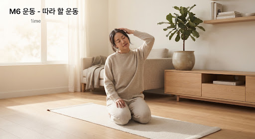

이 조건에 맞는 운동이 없어요. 다른 칩을 눌러 보세요.

지금 추천 · 거북목·어깨 결림 · 20분 이하목·어깨 풀기 스트레칭 · 20분
하루 종일 앉아 굳은 목 앞쪽과 어깨를 풀어 줘요
다른 운동 3개
중간에 멈추면 "여기까지 했어요"로 남고, 다음에 이어서 할 수 있어요.
이 조건에 맞는 운동이 없어요. 다른 칩을 눌러 보세요.

지금 추천 · 거북목·어깨 결림 · 20분 이하하루 종일 앉아 굳은 목 앞쪽과 어깨를 풀어 줘요
중간에 멈추면 "여기까지 했어요"로 남고, 다음에 이어서 할 수 있어요.